전기기사 (2012-03-04 기출문제)
1과목: 전기자기학
1. 표피 부근에 집중해서 전류가 흐르는 현상을 표피효과라 하는데, 표피효과에 대한 설명으로 잘못된 것은?
- 도체에 교류가 흐르면 표면에서부터 중심으로 들어갈수록 전류밀도가 작아진다.
- 표피효과는 고주파일수록 심하다.
- 표피효과는 도체의 전도도가 클수록 심하다.
- 표피효과는 도체의 투자율이 작을수록 심하다.
(정답률: 79%)

2. 30 V/m의 전계내의 80V 되는 점에서 1C의 전하를 전계 방향으로 80cm 이동한 경우, 그 점의 전위 [V]는?
- 9
- 24
- 30
- 56
(정답률: 82%)
3. 그림과 같이 반지름 a[m]인 원형 단면을 가지고 중심 간격이 d[m]인 평행왕복도선의 단위 길이당 자기인덕턴스[H/m]는? (단, 도체는 공기중에 있고 d ≫ a로 한다.)
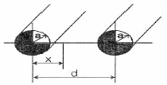
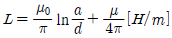
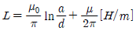
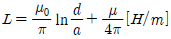
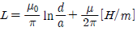
(정답률: 65%)
4. 최대 전계 Em=6인 평면 전자파가 수중을 전파할때 자계의 최대치는 약 몇 [AT/m]인가? (단, 물의 비유전율 εs =80, 비투자율 μs =1 이다.)
- 0.071
- 0.142
- 0.284
- 0.426
(정답률: 71%)
5. 변위 전류에 의하여 전자파가 발생되었을 때 전자파의 위상은?(오류 신고가 접수된 문제입니다. 반드시 정답과 해설을 확인하시기 바랍니다.)
- 변위전류보다 90° 늦다.
- 변위전류보다 90° 빠르다.
- 변위전류보다 30° 빠르다.
- 변위전류보다 30° 늦다.
(정답률: 62%)
6. 비유전율 εr =6, 비투자율 μr =1, 도전율 σ=0인 유전체 내에서의 전자파의 전파속도는 약 몇 [m/s]인가?
- 1.22×108
- 1.22×107
- 1.22×106
- 1.22×105
(정답률: 74%)
7. 강자성체의 세 가지 특성에 포함되지 않는 것은?
- 와전류 특성
- 히스테리시스 특성
- 고투자율 특성
- 포화 특성
(정답률: 71%)
8. 평등 자계와 직각방향으로 일정한 속도로 발사된 전자의 원운동에 관한 설명 중 옳은 것은?
- 플레밍의 오른손 법칙에 의한 로렌쯔의 힘과 원심력의 평형 원운동이다.
- 원의 반지름은 전자의 발사속도와 전계의 세기의 곱에 반비례한다.
- 전자의 원운동 주기는 전자의 발사 속도와 관계되지 않는다.
- 전자의 원운동 주파수는 전자의 질량에 비례한다.
(정답률: 59%)
9. 매질이 완전 유전체인 경우의 전자 파동 방정식을 표시하는 것은?
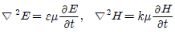
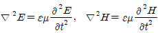
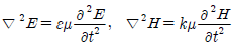
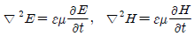
(정답률: 48%)
10. 내압 1000V 정전용량 1μF, 내압 750V 정전용량 2μF, 내압 500V 정전용량 5μF인 콘덴서 3개를 직렬로 접속하고 인가 전압을 서서히 높이면 최초로 파괴되는 콘덴서는?
- 1μF
- 2μF
- 5μF
- 동시에 파괴된다.
(정답률: 88%)
11. 동일한 금속 도선의 두 점간에 온도차를 주고, 고온쪽에서 저온쪽으로 전류를 흘리면, 줄열 이외에 도선속에서 열이 발생하거나 흡수가 일어나는 현상을 지칭하는 것은?(오류 신고가 접수된 문제입니다. 반드시 정답과 해설을 확인하시기 바랍니다.)
- 지벡 효과
- 톰슨효과
- 펠티에 효과
- 볼타 효과
(정답률: 75%)
12. 등자위면의 설명으로 잘못된 것은?
- 등자위면은 자력선과 직교한다.
- 자계 중에서 같은 자위의 점으로 이루어진 면이다.
- 자계 중에 있는 물체의 표면은 항상 등자위면이다.
- 서로 다른 등자위면은 교차하지 않는다.
(정답률: 68%)
13. 미분 방정식의 형태로 나타낸 맥스웰의 전자계 기초 방정식에 해당되는 것은?
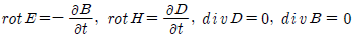
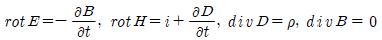
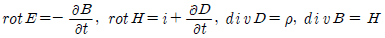
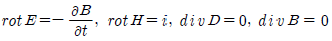
(정답률: 84%)
14. 그림과 같은 회로에서 스위치를 최초 A에 연결하여 일정한 전류 I0[A]를 흘린 다음, 스위치를 급히 B로 전환할 때 저항 R[Ω]에는 1[s]간에 얼마만한 열량 [cal]이 발생 하는가?
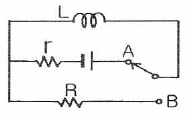
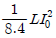
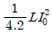
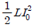
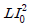
(정답률: 59%)
15. 비유전율 εs =2.2, 고유저항 ρ=1011[Ωㆍm]인 유전체를 넣은 콘덴서의 용량이 200[μF]이었다. 여기에 500[kV] 전압을 가하였을 때 누설전류는 약 몇 [A]인가?
- 4.2
- 5.1
- 51.3
- 61.0
(정답률: 58%)
16. 자유공간 중에서 x=-2, y=4[m]를 통과하고 z축과 평행인 무한장 직선도체에 +z축 방향으로 직류전류 I[A]가 흐를때 점 (2,4,0)[m] 에서의 자계 H[A/m]는?
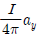
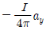
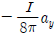
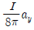
(정답률: 56%)
17. 환상 철심에 권수 1000회의 A코일과 권수 N회의 B 코일이 감겨져 있다. A코일의 자기 인덕턴스가 100[mH]이고, 두 코일 사이의 상호 인덕턴스가 20[mH], 결합 계수가 1일 때 B코일의 권수 N은?
- 100
- 200
- 300
- 400
(정답률: 71%)
18. 반지름 a[m]의 원판형 전기 2중층의 중심축상 x[m]의 거리에 있는 점 P(+전하측)의 전위는? (단, 2중층의 세기는 M[C/m]이다.)
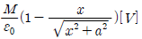
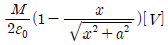
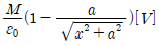
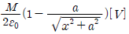
(정답률: 57%)
19. 공극이 있는 환상 솔레노이드에 권수는 1000회, 철심의 길이 ℓ은 10cm, 공극의 길이 ℓg 는 2mm, 단면적은 3cm2, 철심의 비투자율은 800, 전류는 10A라 했을 때, 이 솔레노이드의 자속은 약 몇 [Wb]인가? (단, 누설자속은 없다고 한다.)
- 3×10-2
- 1.89×10-3
- 1.77×10-3
- 2.89×10-3
(정답률: 41%)
20. 자유공간에서 점 P(5,-2,4)가 도체면상에 있으며, 이 점에서의 전계 E=6ax-2ay+3a[V/m] 이다. 점 P에서의 면전하 밀도 ρ[C/m2]은?
- -2ε0
- 3ε0
- 6ε0
- 7ε0
(정답률: 68%)
2과목: 전력공학
21. 화력발전소에서 증기 및 급수가 흐르는 순서는?
- 절탄기 → 보일러 → 과열기 → 터빈 → 복수기
- 보일러 → 절탄기 → 과열기 → 터빈 → 복수기
- 보일러 → 과열기 → 절탄기 → 터빈 → 복수기
- 절탄기 → 과열기 → 보일러 → 터빈 → 복수기
(정답률: 68%)
22. 1선 1km당의 코로나 손실 P[km]를 나타내는 Peek식은? (단, δ : 상대 공기밀도, D : 선간거리 [cm], d : 전선의 지름[cm], f : 주파수 [hz], E : 전선에 걸리는 대지전압 [kV], E0 : 코로나 임계전압 [kV])
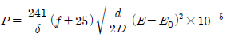
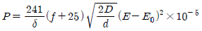
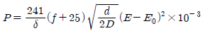
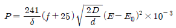
(정답률: 43%)
23. 펌프의 양수량 Q[m3/sec], 유효 양정 Hu[m], 펌프의 효율 ηp, 전동기의 효율 ηm일 때, 양수 발전기의 출력[kW]은?
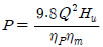
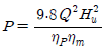
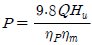
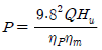
(정답률: 74%)
24. 송전선로에 복도체를 사용하는 주된 이유는?
- 철탑의 하중을 평형 시키기 위하여
- 선로의 진동을 없애기 위하여
- 선로를 뇌격으로부터 보호하기 위하여
- 코로나를 방지하고 인덕턴스를 감소시키기 위하여
(정답률: 85%)
25. 전압 강하율이 10[%]인 단거리 배전선로가 있다. 송전단의 전압이 100[V]일 때 수전단의 전압은 약 몇 [V]인가?
- 82
- 91
- 98
- 108
(정답률: 81%)
26. 3상 3선식에서 선간거리가 각각 50[cm], 60[cm], 70[cm]인 경우 기하평균 선간거리는 몇 [cm]인가?
- 50.4
- 59.4
- 62.8
- 64.8
(정답률: 75%)
27. 수차를 돌리고 나온 물이 흡출관을 통과할 때 흡출관의 중심부에 진공상태를 형성하는 현상은?
- racing
- jumping
- hunting
- caviatation
(정답률: 82%)
28. 송전선로에서 1선 지락의 경우 지락 전류가 가장 작은 중성점 접지 방식은?
- 비접지 방식
- 직접접지 방식
- 저항 접지 방식
- 소호 리액터 접지 방식
(정답률: 70%)
29. 다음 중 개폐 서지의 이상 전압을 감쇄할 목적으로 설치하는 것은?
- 단로기
- 차단기
- 리액터
- 개폐 저항기
(정답률: 81%)
30. 중거리 송전선로의 T형 회로에서 송전단 전류 Is는? (단, Z, Y 는 선로의 직렬 임피던스와 병렬 어드미턴스이고, Er은 수전단 전압, Ir은 수전단 전류이다.)
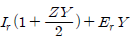
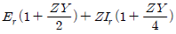
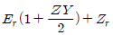
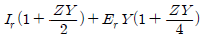
(정답률: 65%)
31. 변전소에서 비접지 선로의 접지보호용으로 사용되는 계전기에 영상전류를 공급하는 것은?
- CT
- GPT
- ZCT
- PT
(정답률: 84%)
32. GIS(Gas Insulated Switch Gear)를 채용할 때, 다음 중 틀린것은?
- 대기 절연을 이용한 것에 비하면 현저하게 소형화 할 수 있다.
- 신뢰성이 향상되고, 안전성이 높다.
- 소음이 적고 환경 조화를 기할 수 있다.
- 시설공사 방법은 복잡하나, 장비비가 저렴하다.
(정답률: 81%)
33. Recloser (R), Sectionalizer (S), Fuse (F)의 보호협조에서 보호협조가 불가능한 배열은? (단, 왼쪽은 후비보호, 오른쪽은 전위보호 역할임)
- R - R- F
- R - S
- R - F
- S - F - R
(정답률: 79%)
34. 무부하시 충전전류 차단만이 가능한 것은?
- 진공 차단기
- 유입 차단기
- 단로기
- 자기 차단기
(정답률: 80%)
35. 전원이 양단에 있는 환상선로의 단락보호에 사용되는 계전기는?
- 방향거리 계전기
- 부족전압 계전기
- 선택접지 계전기
- 부족전류 계전기
(정답률: 79%)
36. 고압 배전선로의 중간에 승압기를 설치하는 주목적은?
- 부하의 불평형 방지
- 말단의 전압강하 방지
- 전력손실의 감소
- 역률 개선
(정답률: 55%)
37. 전력계통의 주파수 변동의 원인 중 가장 큰 영향을 미치는 것은?
- 변압기의 탭 조정
- 스팀 터빈 발전기의 거버너 밸브 열고 닫기
- 발전기의 자동전압 조정기(AVR)의 동작
- 송전선로에 병렬 콘덴서의 투입
(정답률: 60%)
38. 직접 접지방식이 초고압 송전선에 채용되는 이유 중 가장 적당한 것은?
- 지락 고장시 병행 통신선에 유기되는 유도 전압이 적기때문에
- 지락시의 지락 전류가 적으므로
- 계통의 절연을 낮게 할 수 있으므로
- 송전선의 안정도가 높으므로
(정답률: 62%)
39. 단락점까지의 전선 한 가닥의 임피던스가 Z=6+j8[Ω](전원포함), 단락 전의 단락점 전압이 22.9[kV]인 단상 2선식 전선로의 단락용량은 몇 [kVA]인가? (단, 부하전류는 무시한다.)(오류 신고가 접수된 문제입니다. 반드시 정답과 해설을 확인하시기 바랍니다.)
- 13110
- 26220
- 39330
- 52440
(정답률: 40%)
40. 각 수용가의 수용설비용량이 50[kW], 100[kW], 80[kW], 60[kW], 150[kW]이며, 각각의 수용률이 0.6, 0.6, 0.5, 0.5, 0.4일 때 부하의 부등률이 1.3이라면 변압기의 용량은 약 몇 [kVA]가 필요한가? (단, 평균 부하 역률은 80%라고 한다.)
- 142
- 165
- 183
- 212
(정답률: 71%)
3과목: 전기기기
41. 변압기 1차측 사용 탭이 6300[V]인 경우 2차측 전압이 110[V] 였다면 2차측 전압을 약 120[V]로 하기 위해서는 1차측의 탭을 몇 [V]로 선택해야 하는가?
- 6000
- 6300
- 6600
- 6900
(정답률: 63%)
42. 정격이 같은 2대의 단상 변압기 1000[kVA]의 임피던스 전압은 각각 8[%]와 7[%]이다. 이것을 병렬로 하면 몇[kVA]의 부하를 걸 수가 있는가?
- 1865
- 1870
- 1875
- 1880
(정답률: 64%)
43. 동기 전동기에 설치된 제동권선의 효과로 맞지 않는 것은?
- 송전선 불평형 단락시 이상전압 방지
- 과부하 내량의 증대
- 기동 토크의 발생
- 난조 방지
(정답률: 62%)
44. 75[W] 정도 이하의 소출력 단상 직권 정류자 전동기의 용도로 적합하지 않는 것은?
- 소형공구
- 치과 의료용
- 믹서
- 공작기계
(정답률: 78%)
45. 정격이 5[KW], 100[V], 50[A], 1800[rpm]인 타여자 직류 발전기가 있다. 무부하시의 단자전압은? (단, 계자전압 50[V], 계자전류 5[A], 전기자 저항 0.2[Ω] 브러시의 전압강하는 2[V]이다.)
- 100
- 112
- 115
- 120
(정답률: 72%)
46. 다음 중 VVVF 제어방식으로 가장 적당한 전동기는?
- 동기 전동기
- 유도 전동기
- 직류 직권 전동기
- 직류 분권 전동기
(정답률: 72%)
47. 다음 권선법 중 직류기에서 주로 사용되는 것은?
- 폐로권, 환상권, 이층권
- 폐로권, 고상권, 이층권
- 개로권, 환상권, 단층권
- 개로권, 고상권, 이층권
(정답률: 68%)
48. 동기 조상기의 회전수는 무엇에 의하여 결정되는가?
- 효율
- 역률
- 토크 속도
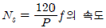
(정답률: 80%)
49. 전기자 도체의 굵기, 권수가 모두 같을 때 단중 중권에 비해 단중 파권 권선의 이점은?
- 전류는 커지며 저전압이 이루어진다.
- 전류는 적으나 저전압이 이루어진다.
- 전류는 적으나 고전압이 이루어진다.
- 전류가 커지며 고전압이 이루어진다.
(정답률: 72%)
50. 돌극형 동기 발전기에서 직축 동기 리액턴스를 Xd, 횡축 동기 리액턴스를 Xq라 할 때의 관계는?
- Xd > Xq
- Xd < Xq
- Xd = Xq
- Xd ≪ Xq
(정답률: 75%)
51. 반도체 사이리스터로 속도 제어를 할 수 없는 것은?
- 정지형 레너드 제어
- 일그너 제어
- 초퍼 제어
- 인버터 제어
(정답률: 59%)
52. 보극이 없는 직류기에서 브러시를 부하에 따라 이동시키는 이유는?
- 공극 자속의 일그러짐을 없애기 위하여
- 유기기전력을 없애기 위하여
- 전기자 반작용의 감자분력을 없애기 위하여
- 정류작용을 잘 되게 하기 위하여
(정답률: 53%)
53. 1차 전압 2200[V], 무부하 전류 0.088[A], 철손 110[W]인 단상 변압기의 자화 전류는 약 몇 [A]인가?
- 0.⑤
- 0.038
- 0.072
- 0.088
(정답률: 64%)
54. 반도체 정류기에서 첨두 역방향 내전압이 가장 큰 것은?
- 셀렌 정류기
- 게르마늄 정류기
- 실리콘 정류기
- 아산화동 정류기
(정답률: 81%)
55. 유도 전동기와 직결된 전기 동력계의 부하 전류를 증가하면 유도 전동기의 속도는?
- 증가한다.
- 감소한다.
- 변함이 없다.
- 동기 속도로 회전한다.
(정답률: 42%)
56. 동일 용량의 변압기 두 대를 사용하여 11000[V]의 3상식 간선에서 440[V]의 2상 전력을 얻으려면 T좌 변압기의 권수비는 약 얼마로 해야 하는가?
- 28
- 30
- 22
- 25
(정답률: 44%)
57. 동기 각속도 ω0, 회전자 각속도 ω인 유도 전동기의 2차 효율은?
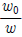
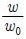
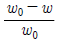
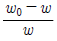
(정답률: 59%)
58. 유도 전동기의 2차 여자제어법에 대한 설명으로 틀린 것은?
- 권선형 전동기에 한하여 이용된다.
- 동기 속도 이하로 광범위하게 제어할 수 있다.
- 2차측에 슬립링을 부착하고 속도 제어용 저항을 넣는다.
- 역률을 개선할 수 있다.
(정답률: 38%)
59. 대형 직류 전동기의 토크를 측정하는데 가장 적당한 방법은?
- 전기 동력계
- 와전류 제동기
- 프로니 브레이크법
- 앰플리다인
(정답률: 57%)
60. A,B 2대의 동기 발전기를 병렬운전 할 때 B발전기의 여자전류를 증가시키면?
- B발전기의 역률 저하
- B발전기의 전류 감소
- B발전기의 무효 전력 감소
- B발전기의 전력 증가
(정답률: 63%)
4과목: 회로이론 및 제어공학
61. 상태방정식
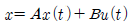
에서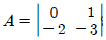
인 시스템의 안정도는 어떠한가?(문제 오류로 실제 시험에서는 모두 정답처리 되었습니다. 여기서는 1번을 누르면 정답 처리 됩니다.)- 안정하다.
- 불안정하다.
- 임계안정하다.
- 판정불능
(정답률: 79%)
62. 그림과 같은 RC 회로에서 RC ≪ 1 인 경우 어떤 요소의 회로인가?
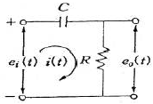
- 비례요소
- 미분요소
- 적분요소
- 추이요소
(정답률: 68%)
63. 서보모터의 특징으로 틀린 것은?
- 원칙적으로 정역전 운전이 가능하여야 한다.
- 저속이며 거침없는 운전이 가능하여야 한다.
- 직류용은 없고 교류용만 있다.
- 급가속, 급감속이 용이한 것이라야 한다.
(정답률: 78%)
64. 그림과 같은 블록선도로 표시되는 제어계는?
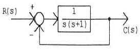
- 0형
- 1형
- 2형
- 3형
(정답률: 72%)
65. 자동제어계의 기본적 구성에서 제어요소는 무엇으로 구성되는가?
- 비교부와 검출부
- 검출부와 조작부
- 검출부와 조절부
- 조절부와 조작부
(정답률: 77%)
66. 루프 전달함수가 다음과 같은 제어계의 실수축 상의 근궤적 범위는? (단, K>0)
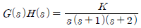
- 0 ~ -1 사이의 실수축상
- -1 ~ -2 사이의 실수축상
- -2 ~ -∞ 사이의 실수축상
- 0 ~ -1, -2 ~ -∞ 사이의 실수축상
(정답률: 74%)
67. 다음 설명 중 틀린 것은?
- 상태 공간 해석법은 비선형 • 시변 시스템에 대해서도 사용 가능하다.
- 상태 방정식은 입력과 상태변수의 관계로 표현된다.
- 상태 변수는 시스템의 과거, 현재 그리고 미래 조건을 나타내는 척도로 이용된다.
- 상태 방정식의 형태가 다르게 표현되면 시간응답 또는 주파수 응답이 변한다.
(정답률: 47%)
68.
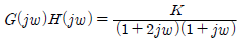
의 이득 여유가 20[dB]일 때 K 값은? (단, ω =0이다.)- 0
- 1/10
- 1
- 10
(정답률: 51%)
69. 그림과 같은 신호흐름 선도에서 C/R 를 구하면?
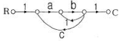
(정답률: 78%)
70. 나이퀴스트 선도에서의 임계점 (-1, J0)는 보드 선도에서 대응하는 이득[dB]과 위상은?
- 1, 0°
- 0, -90°
- 0, -180°
- 0, 90°
(정답률: 70%)
71. 그림과 같은 파형의 파고율은?
- 1/√3
- 2/√3
- √2
- √3
(정답률: 59%)
72. 각 상의 임피던스 Z=6+j8[Ω] 인 평형 Δ부하에 선간 전압이 약 220[V]인 대칭 3상 전압을 가할 때 선전류는 약 몇 [A]인가?
- 11
- 13.5
- 22
- 38.1
(정답률: 67%)
73. 어떤 회로에서 유효전력 80[W], 무효전력 60[Var] 일때 역률은?
- 0.8%
- 8%
- 80%
- 800%
(정답률: 73%)
74. 송전 선로가 무손실 선로일 때 L=96[mH]이고, C=0.6j[μF]이면 특성 임피던스[Ω]는?
- 100
- 200
- 400
- 500
(정답률: 75%)
75. 어떤 회로에 100+j20[V]인 전압을 가할 때 4+j3[A]인 전류가 흐른다면 이 회로의 임피던스[Ω]는?
- 18.4-j8.8
- 27.3+j15.2
- 48.6+j31.4
- 65.7-j54.3
(정답률: 73%)
76. 다음과 같은 T형 회로의 임피던스 파라미터 Z22의 값은?
- Z1
- Z3
- Z1+Z3
- Z2+Z3
(정답률: 68%)
77. 불평형 3상 전류가 Ia=16+j2[A], Ib=-20-9j[A], Ic=-2+j10[A] 일 때 영상분 전류 [A]는?
- -2 + j
- -6 + j3
- -9 + j6
- -18 + j9
(정답률: 61%)
78. 저항이 40[Ω], 인덕턴스가 79.58[mH]인 R-L 직렬회로에 311sin(377t+30°)[V]의 전압을 가할 때 전류의 순시 값[A]은 약 얼마인가?
- 4.4 ∠ -6.87°
- 4.4 ∠ 36.87°
- 6.2 ∠ -6.87°
- 6.2 ∠ 36.87°
(정답률: 30%)
79. 단자 a, b간에 25[V]의 전압을 가할 때, 5[A]의 전류가 흐른다. 저항 r1, r2에 흐르는 전류비가 1 : 3일 때 r1, r2의 값은?
- r1=12, r2=4
- r1=4, r2=12
- r1=6, r2=2
- r1=2, r2=6
(정답률: 62%)
80. 테브낭 정리를 사용하여 그림 (a)의 회로를 그림 (b)와 같이 등가회로를 만들고자 할 때 V[V]와 R[Ω]의 값은?
- V=5[V], R=0.6[Ω]
- V=2[V], R=2[Ω]
- V=6[V], R=2.2[Ω]
- V=4[V], R=2.2[Ω]
(정답률: 62%)
5과목: 전기설비기술기준 및 판단기준
81. 사용전압이 35kV 이하인 특고압 가공전선과 가공 약전류 전선 등을 동일 지지물에 시설하는 경우, 특고압 가공 전선로는 어떤 종류의 보안공사로 하여야 하는가?
- 제 1종 특고압 보안공사
- 제 2종 특고압 보안공사
- 제 3종 특고압 보안공사
- 고압 보안공사
(정답률: 61%)
82. 버스 덕트 공사에 덕트를 조영재에 붙이는 경우 지지점간의 거리는?
- 2m 이하
- 3m 이하
- 4m 이하
- 5m 이하
(정답률: 44%)
83. 폭연성 분진 또는 화약류의 분말이 전기설비가 발화원이 되어 폭발할 우려가 있는 곳의 저압 옥내 전기설비는 어느 공사에 의하는가?
- 캡타이어 케이블 공사
- 합성 수지관 공사
- 애자사용 공사
- 금속관 공사
(정답률: 64%)
84. 고압 가공인입선의 높이는 그 아래에 위험표시를 하였을 경우에 지표상 몇 [m] 까지로 감할 수 있는가?
- 2.5
- 3
- 3.5
- 4
(정답률: 70%)
85. 가공 전선로에 사용하는 지지물의 강도 계산에 적용하는 풍압하중 중 병종풍압하중은 갑종풍압하중에 대한 얼마의 풍압을 기초로 하여 계산한 것인가?
- 1/2
- 1/3
- 2/3
- 1/4
(정답률: 70%)
86. 고압 가공전선이 케이블인 경우 가공전선과 안테나 사이의 이격거리는 몇 [cm] 이상인가?
- 40
- 80
- 120
- 160
(정답률: 52%)
87. 고압 지중전선이 지중 약전류전선 등과 접근하거나 교차하는 경우에 상호의 이격거리가 몇 [cm] 이하인 때에는 두전선이 직접 접촉하지 아니하도록 조치하여야 하는가?
- 15
- 20
- 30
- 40
(정답률: 46%)
88. 저압 옥내간선의 전원 측 전로에는 그 저압 옥내간선을 보호할 목적으로 어느 것을 시설하여야 하는가?
- 접지선
- 과전류 차단기
- 방전 장치
- 단로기
(정답률: 69%)
89. 제 2종 접지공사를 시설하여야 하는 것은?(오류 신고가 접수된 문제입니다. 반드시 정답과 해설을 확인하시기 바랍니다.)
- 특고압 계기용 변압기의 2차측 전로
- 변압기로 특고압 선로에 결합되는 고압 전로의 방전장치
- 특고압 가공전선이 도로 등과 교차하는 경우 시설하는 보호망
- 특고압 전로 또는 고압 전로와 저압 전로를 결합하는 변압기의 저압측 중성점
(정답률: 41%)
90. 옥내전로에 대지전압에 대한 규정으로 주택의 전로 인입구에 절연변압기를 사람이 쉽게 접촉할 우려가 없이 시설하는 경우 정격용량이 몇 [kVA] 이하일 때 인체 보호용 누전차단기를 시설하지 않아도 되는가?
- 2
- 3
- 5
- 10
(정답률: 36%)
91. 철주를 강관에 의하여 구성되는 사각형의 것일 때 갑종 풍압하중을 계산하려 한다. 수직 투영면적 1[m2]에 대한 풍압하중은 몇 [Pa]를 기초하여 계산하는가?
- 588
- 882
- 1117
- 1255
(정답률: 52%)
92. 최대 사용전압 15[V]를 넘고 30[V] 이하인 소세력 회로에 사용하는 절연변압기의 2차 단락전류 값이 제한을 받지 않을 경우는 2차측에 시설하는 과전류 차단기의 용량이 몇 [A] 이하일 경우인가?
- 0.5
- 1.5
- 3.0
- 5.0
(정답률: 49%)
93. 가공공동지선에 의한 제2종 접지공사에 있어 가공공동지선과 대지간의 합성 전기저항 값은 몇[m]를 지름으로하는 지역마다 규정하는 접지 저항값을 가지는 것으로 하여야 하는가?
- 400
- 600
- 800
- 1000
(정답률: 40%)
94. 옥내에 시설되는 전동기가 소손될 우려가 있는 경우 과전류가 생겼을 때 자동으로 차단하거나 경보를 발생하는 장치를 시설하여야 한다. 이 규정에 적용되는 전동기 정격 출력의 최소값은?
- 150W 초과
- 200W 초과
- 250W 초과
- 300W 초과
(정답률: 47%)
95. 제 1종 특고압 보안공사에 의해서 시설하는 전선로의 지지물로 사용할 수 없는 것은?(오류 신고가 접수된 문제입니다. 반드시 정답과 해설을 확인하시기 바랍니다.)
- 철탑
- B종 철주
- B종 철근 콘크리트주
- A종 철근 콘크리트주
(정답률: 63%)
96. 변압기 1차측 3300[V], 2차측 220[V]의 변압기 전로의 절연내력시험 전압은 각각 몇 [V]에서 10분간 견디어야 하는가?
- 1차측 4950[V], 2차측 500[V]
- 1차측 4500[V], 2차측 400[V]
- 1차측 4125[V], 2차측 500[V]
- 1차측 3300[V], 2차측 400[V]
(정답률: 63%)
97. 도로에 시설하는 가공 직류 전차선로의 경간은 몇 [m] 이하로 하여야 하는가?(오류 신고가 접수된 문제입니다. 반드시 정답과 해설을 확인하시기 바랍니다.)
- 30
- 40
- 50
- 60
(정답률: 33%)
98. 고압 가공전선로의 지지물에 첨가한 통신선을 횡단보도교 위에 시설하는 경우 그 노면상의 높이는 몇 [m] 이상으로 하여야 하는가?
- 3 이상
- 3.5 이상
- 5 이상
- 5.5 이상
(정답률: 60%)
99. 전기철도용 변전소 이외의 변전소의 주요 변압기에 계측장치가 꼭 필요하지 않은 것은?
- 전압
- 전류
- 주파수
- 전력
(정답률: 73%)
100. 시가지에 시설하는 154[kV] 가공전선로에는 지락 또는 단락이 발생한 경우 몇 초 이내에 자동적으로 이를 전로로부터 차단하는 장치를 시설하여야 하는가?
- 1
- 2
- 3
- 5
(정답률: 71%)